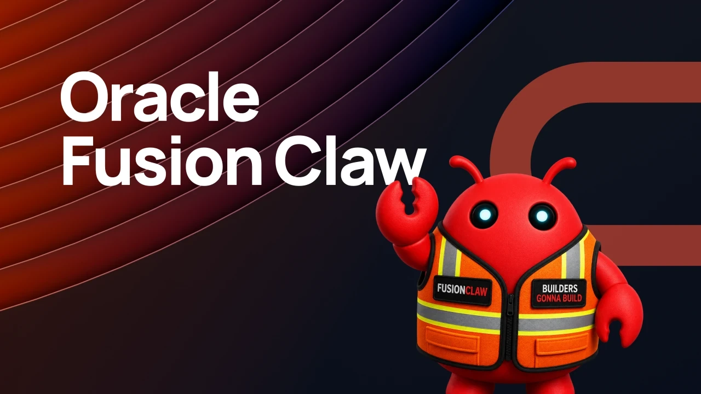
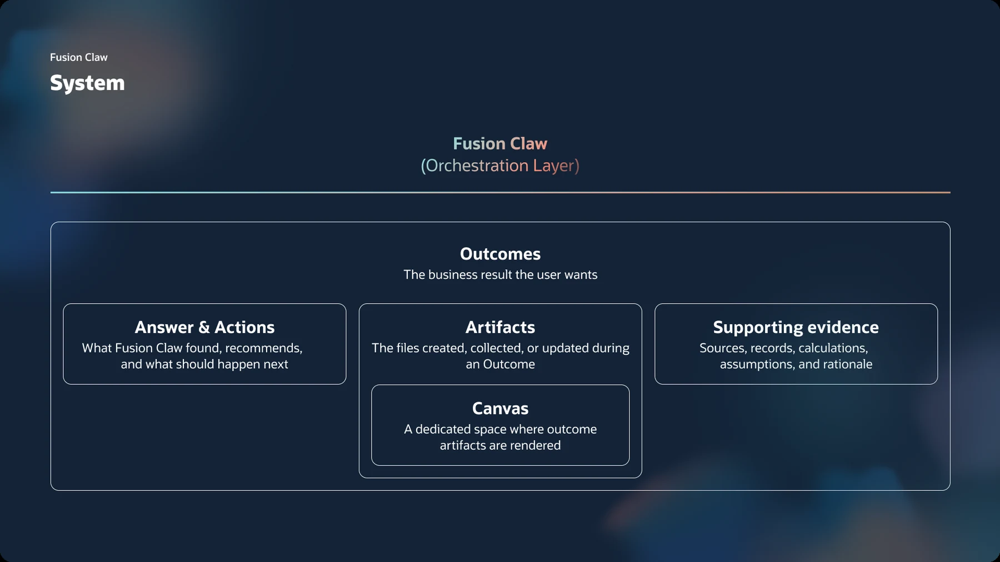

Fusion Claw: Outcome Framework
AI agents now finish whole tasks and hand back a result. I designed the framework that makes every result clear, consistent, and on brand, whichever agent produced it.

Roles & responsibilities
Prompt engineering: intent taxonomy and component-selection rules, written as skills
Design engineering: design-to-runtime mapping and widget JSON
Design systems: visual style guide and best practices
Collaboration
Engineering
Design system team
Tools
Figma
Codex
Claude
Internal environment
The decision
The agent declares intent. The product owns rendering.
Why. When the model decides both what to say and how it looks, layouts drift. Rules that need no model sit in schema and code, so consistency does not depend on the model behaving.
The problem
An agent can now be handed a task and come back with a finished result: an analysis, a briefing, a deck. But when the model decides both what the answer says and how it looks, the same question gets a table one time and paragraphs the next, key numbers get buried, and colors and type drift off brand. For customers who forward these results to their own leadership, “usually right” is not good enough.
- Inconsistent layout. Generated pages looked different from one answer to the next.
- No guidance teams would use. Teams do not want to read a whole spec, so there was no usable UI and UX guidance.
- Components went unused. The AI generates output outside the app, so Redwood components and best practices were not applied.
- Intent to component. Someone had to decide how a user’s intent maps to the right component.
The solution
The model says what kind of answer this is and what each piece means. A governed layer turns that into the right Redwood components. I built the guidance that makes that work. My focus was standardization: one structure and one look for every team.
A visual style guide
I wrote a style guide for the design system in a form a model can follow: tokens, type, spacing and accessibility rules for pages, decks, documents and charts.
Best practices from internal docs
I turned long internal specs into short best practices, including which component fits which kind of content, so teams get the guidance without reading the spec.
System prompts and skills, with assets
All of it is packaged as system prompts and skills, with assets, so any team can use it and build the experience they want with the same look and feel.
Design to runtime
As design engineer, I carried the design system into what the app runs. For known components the model emits widget JSON, checked against a schema and lint gates, so consistency does not depend on the model behaving.
My value offering
- Token optimization. Rules that need no model sit in schema and code, so less rides along in every prompt.
- Reusable across teams. The same skills serve different teams without a rewrite.
- One central place. The style guide, best practices and skills live together.
- Rapid prototypes. Quick prototypes show the effect of the guidance before anything is built.
The system
Fusion Claw is the orchestration layer. Every Outcome, the business result a user wants, is built from three parts:

- Answer and actions. What Fusion Claw found, recommends, and what should happen next.
- Artifacts. The files created, collected or updated during an Outcome, rendered in a dedicated Canvas.
- Supporting evidence. Sources, records, calculations, assumptions and rationale.
How the agent decides
Watch one answer come together: the request, the intent the agent declares, the contract check, and the governed outcome the product renders.
The behavior layer in plain terms: for each situation, what the agent does, and what makes sure it does.
| When | The agent | Enforced by |
|---|---|---|
| A question with a headline figure, like overdue invoices | Leads with the number | Prompt skill |
| A list of three or more comparable items | Shows a table | Component-selection rule |
| Any answer | Attaches source, calculation and assumption | The Outcome contract |
| A next step exists | Proposes actions, like remind or escalate, instead of leaving it to the reader | Prompt skill |
| A known component is needed | Emits widget JSON, not free-form markup | Schema and lint gates |
Simplified. It is not the production schema.
In the product
Fusion Claw is live. Oracle’s public demo shows it working through cost and profit planning.
What I learned
Governing AI output is a systems design problem, not a documentation problem. For every rule, the real decision is where it lives: in the prompt, the schema, or the code.
Announced by Oracle
- Oracle Introduces Fusion Agentic Applications Mar 24, 2026
- Oracle Expands AI Agent Studio for Fusion Applications with Agentic Applications Builder Mar 24, 2026
- Oracle Extends Fusion Agentic Applications with Introduction of Fusion Claw Sep 29, 2026
- Fusion Claw capabilities Oracle Help Center
In the press
Note. Much of this work is under NDA, so I share more in interviews.